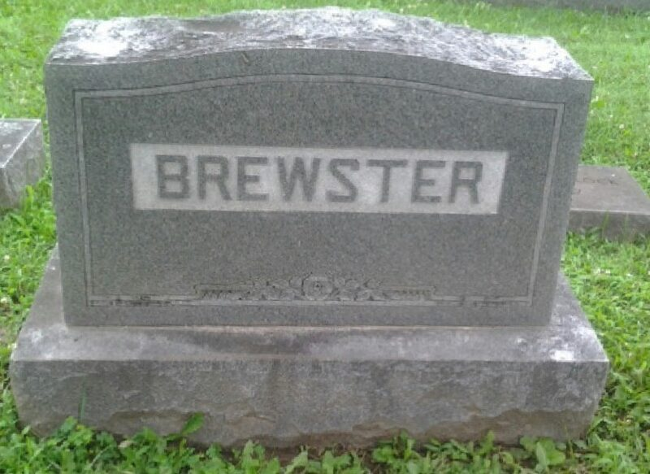

Brewster line · Homer Jr.'s brother · Cincinnati, Ohio
Also known as: Eugene E. Brewster (name on his Find a Grave memorial)
Profile status: (SUPPORTED) parents and his death on 16 October 1983 are proved; his marriages to Yvonne Farrell and Carol A. Hillman and his three children are supported; his exact birth date is not proved
Headstone, Greenlawn Cemetery, Milford, Ohio (Find a Grave)
Quick Facts
Born
Late 1933 (SUPPORTED); aged 6 in 1940, 16 in 1950, and 50 at his death in October 1983 Tennessee (DOCUMENTED); his Ohio death index entry. The exact place is not known; his brother Elmer was born at "Brewstertown," Tennessee (UNPROVED)
Died
16 October 1983, Fairfield, Butler County, Ohio, age 50 (DOCUMENTED) Ohio death index: Eugene E. Brewster, born 1933 in Tennessee, married, living in Hamilton, Ohio; certificate 071732. His mother's 1987 obituary also calls him "the late Eugene."
Last residence
Not yet established.
Buried
Greenlawn Cemetery, Milford, Clermont County, Ohio, Section 21, lot 88 (SUPPORTED); Find a Grave memorial for Eugene E. Brewster, 1933–1983, and Geni's burial address agree
Occupation
Not found
Religion
Not found
Immediate Family
Parents
Homer William Brewster Sr. (1911–1991) (DOCUMENTED) Sarah Hazel Kelly (1912–1987) (DOCUMENTED) His mother's 1987 obituary and his father's 1991 obituary both name him as their late son. Her maiden name is spelled Kelley in her own obituary.
Spouses
Yvonne Suzanne (Farrell) Brewster (1936–1994) (SUPPORTED) Several sources agree: Geni lists her as his wife; a family tree names the two of them as the parents of Melanie Ann and Robert; a Kentucky birth index entry names Yvonne Farrell as the mother of a Robert A. Brewster; and Brewster is one of her names in her Social Security record. No marriage record has been found. Their son Robert was born in March 1955, and the marriage had ended by May 1970.
Carol Ann (Craig) Brewster (1937–2019) (SUPPORTED) The Kentucky marriage index shows Eugene E. Brewster, 43, divorced after one earlier marriage, marrying Carol A. Hillman, 40, in Campbell County, Kentucky, on 19 November 1977 (certificate 24676), and the same couple marrying again there on 9 November 1979 (certificate 28705). (DOCUMENTED) The name, middle initial and age fit him, and he was married when he died in 1983. A family note on her Find a Grave memorial describes the marriage as "Gene Brewster, no children, 8 years." (UNPROVED)
Children
Robert A. Brewster, born 22 March 1955, Greenup County, Kentucky (DOCUMENTED)
All three were with his wife Yvonne. Robert's birth is in the Kentucky birth index, which names Yvonne Farrell as his mother. Melanie Ann's and Martin David's birth dates come from a family tree and match U.S. public records for people of those names and birth dates; Melanie later used the name Hirano and lived in Ocean Springs, Mississippi, where her mother died. That Eugene was the father of all three is (SUPPORTED).
Feb 1987 Named as "the late Eugene" in his mother's obituary (DOCUMENTED)
Life Story
Eugene Brewster was born in 1933 or early 1934, the eldest son of Homer William Brewster Sr. and Sarah Hazel Kelly. (SUPPORTED) His parents' obituaries name him as their son. (DOCUMENTED) In 1940 he was six years old and living with his family in Morgan County, Tennessee, and by 1950, at sixteen, the family had moved north to Cincinnati, Ohio. (SUPPORTED)
Family remember Gene as a gifted baseball player who was about to be called up to the major leagues, until diabetes, which doctors could not yet control well, ended his chances. (FAMILY ACCOUNT) His nephew Earl Gene Brewster Jr. was given his middle name for him, stayed with him several times growing up, and remembers him as "a great guy." (FAMILY ACCOUNT)
In the 1950s he and Yvonne Suzanne Farrell of Cincinnati started a family. Their son Robert was born in Greenup County, Kentucky, on 22 March 1955 (DOCUMENTED), followed by Melanie Ann on 14 April 1960 and Martin David on 4 November 1961, both in Hamilton County, Ohio. (SUPPORTED) No record of the marriage has been found, and it had ended by May 1970, when Yvonne married again in Tennessee, still using the name Brewster. (DOCUMENTED)
In November 1977, at 43, Eugene married Carol Ann (Craig) Hillman, a Cincinnati-born executive secretary, across the river in Campbell County, Kentucky, and the two married again there in November 1979. (SUPPORTED) He died on 16 October 1983 in Fairfield, Ohio, at 50, and is buried in Greenlawn Cemetery in Milford, Ohio. (DOCUMENTED) When his mother died in February 1987 she was survived by four of her children, and her obituary remembers "the late Eugene." (DOCUMENTED)
Photo Gallery
His headstone: "Eugene E. Brewster, 1933 ✝ 1983." Photo by GoneButNotForgotten, Find a Grave

An upright BREWSTER stone, also on his memorial (surname only). Photo by GoneButNotForgotten, Find a Grave
Sources and Evidence
Obituary of Sarah Hazel (Kelley) Brewster, died 28 February 1987, Hamilton, Ohio: mother of Eunice Burton, Aileene Gilpin, Elmer and Homer Brewster "and the late Eugene and Earl Brewster" (newspaper clipping in the family collection) (DOCUMENTED)
Obituary of Homer W. Brewster, died 8 March 1991: father of Aileene Gilpin, Elmer and Homer Brewster "and the late Eunice Burton, Eugene and Earl Brewster" (newspaper clipping in the family collection) (DOCUMENTED)
Death notice of Eunice E. Burton, died 16 December 1987: sister of Aileen Gilpin, Elmer and Homer Brewster "and the late Earl and Eugene Brewster" (newspaper clipping in the family collection) (DOCUMENTED)
Obituary of Elmer Brewster, died 21 August 1993: predeceased by his brother Eugene (newspaper clipping in the family collection) (DOCUMENTED)
Family account of his nephew Earl G. Brewster Jr., by email, 10 November 2026: baseball career cut short by diabetes; Earl Jr.'s middle name given for him. (FAMILY ACCOUNT)
1940 U.S. census, Civil District 12, Morgan County, Tennessee: "Eugene T Brewster" (probably a misreading of E), age 6, in the household of Homer W. and Sarah H. Brewster with his brothers and sisters. FamilySearch index, read 9 November 2026. (DOCUMENTED)
1950 U.S. census, Cincinnati, Hamilton County, Ohio: "Eugene E Brewster," age 16, born Tennessee, with his parents Homer and Sarah H. and siblings. FamilySearch index, read 9 November 2026. (DOCUMENTED)
Ohio Death Index: Eugene E. Brewster, died 16 October 1983, Fairfield, Butler County, Ohio, age 50, born 1933 Tennessee, married, residence Hamilton; certificate 071732, volume 25392. FamilySearch index, read 9 November 2026. (DOCUMENTED)
Kentucky Marriage Index: Eugene E. Brewster, 43, and Carol A. Hillman, 40, Campbell County, 19 November 1977, certificate 24676 (SortedByName); Eugene Brewster, 46, and Carol Brewster, 42, Campbell County, 9 November 1979, certificate 28705 (SortedByName). Index (DOCUMENTED); identity (SUPPORTED)
Kentucky birth index: Robert A. Brewster, born 22 March 1955, Greenup County, mother Yvonne Farrell. FamilySearch index. (DOCUMENTED)
U.S. Public Records Index: Melanie A. Brewster (also Hirano), born 14 April 1960, Ocean Springs, Mississippi (FamilySearch); Martin David Brewster, born 4 November 1961, Okeana and Cincinnati, Ohio (FamilySearch). (SUPPORTED)
Find a Grave, memorial 134097895, Eugene E Brewster (1933–1983), Greenlawn Cemetery, Milford, Clermont County, Ohio, Section 21, lot 88; created 2014; two photos (his flat stone reading "Eugene E. Brewster, 1933 ✝ 1983" and an upright BREWSTER family stone); read 6 November 2026. Gives years only and links no family members. (SUPPORTED)
Geni, read 2026-11-03: Eugene Brewster profile: born 1933, Tennessee; died 16 October 1983, Fairfield, Ohio; wife Yvonne; children Melanie and Robert; burial field shows a U.S. 50 address in Milford, which is Greenlawn Cemetery (tree lead only) (UNPROVED)
FamilySearch family-tree profile G719-6GS shows Eugene E. Brewster, born about 1933 in Cincinnati, died 1983, buried Milford, and lists Yvonne Suzanne Farrell as spouse. It cites only a BillionGraves index. This may be a duplicate of LFQS-W33, but the birthplace conflicts with the 1940/1950 census and Ohio death-index birthplace (Tennessee); no merge or identity reconciliation is established. Tree assertion only. (UNPROVED; possible duplicate/conflict)
U.S. Social Security Applications and Claims, entry for Yvonne Suzanne Farrell: Brewster is one of her recorded names. Transcription at SortedByName, read 6 November 2026. (SUPPORTED) for her marriage to Eugene
Kentucky birth index entry for Robert A. Brewster, mother Yvonne Farrell, transcribed on the same SortedByName page. (SUPPORTED)
Campbell County, Tennessee, Marriage Record No. 29483: Yvonne Suzanne Brewster married Charles Clay Goff on 18 May 1970 at Jellico, showing her marriage to Eugene had ended. Image of the original register page, read 6 November 2026. (DOCUMENTED)
Kollet Family Tree, Yvonne Suzanne Farrell (ref. 289), last updated 19 December 2022: names Eugene E. Brewster as her husband and the father of Robert, Melanie Ann and Martin David (tree lead only). (UNPROVED)
Grades: (DOCUMENTED) an original record says it · (SUPPORTED) several records point to it · (FAMILY ACCOUNT) the family's own telling · (UNPROVED) a lead, not proved.
Research Notes and Open Questions
Additional Quick-Fact Details
Residence: Morgan County, Tennessee, in 1940 (SUPPORTED); Cincinnati, Ohio, in 1950 (DOCUMENTED); Campbell County, Kentucky, in 1977–79 (SUPPORTED); Hamilton, Ohio, at his death in 1983 (DOCUMENTED)
Death certificate: Ohio certificate 071732 (1983, volume 25392) would give his exact birth date and birthplace, his wife's name, his job, any military service and the funeral home.
Burial: ask Greenlawn Cemetery, Milford, for the interment record for Section 21, lot 88; it may give his full death date and who bought the lot. The two photos on the Find a Grave memorial were checked: his flat stone gives years only (1933–1983), and the upright stone reads only BREWSTER.
Obituary: Cincinnati Enquirer and Hamilton Journal-News, mid to late October 1983. The Cincinnati Enquirer and Cincinnati Post death notices of 17–20 October 1983 are the first place to look; the Post is free on NewsBank with a Cincinnati and Hamilton County Public Library card. It would name his wife, children and survivors.
Carol: the 1977 Kentucky index says she had one earlier marriage and the 1979 index says two, but her family names two husbands before Eugene (Hillman and Henderson). Kentucky certificates 24676 (1977) and 28705 (1979) would settle it. Her family may also have photos of Gene from 1977–83.
Marriage to Yvonne: FamilySearch has no Eugene–Yvonne marriage for 1952–62 in Kentucky, Ohio or Indiana. Since she married George Zurline in November 1955, search the Hamilton County, Ohio, probate marriage index for 1956–60 under Brewster × Zurline as well as Brewster × Farrell.
Divorce: Hamilton County Domestic Relations Court, 1960s, for the decree ending his marriage to Yvonne.
Children: Ohio birth certificates for Melanie Ann (1960) and Martin David (1961), and Robert's full Kentucky certificate, would name the father.
Birthplace: no record yet says where he was born. The family was in Morgan County, Tennessee, by 1940; his sister Eunice was born in Cincinnati in 1930.
FamilySearch duplicate check, 19 Nov 2026: the current tree link is LFQS-W33; search also surfaced G719-6GS, which is linked to Yvonne but says Cincinnati birthplace and cites only BillionGraves. Kept as possible duplicate/unresolved; do not merge or transfer data without record-level identity proof.
Not the same man as the Eugene E. Brewster born 23 April 1933 who lived in Cincinnati and Florida until about 2004 (U.S. Public Records); that man was alive after our Eugene died.
Searched SortedByName's Eugene Brewster entries for a Social Security claim or death record matching 1933–1983: none found.
Geni lists Melanie and Robert twice each on Eugene's profile and does not list Martin David; each child is listed once here.
No photo of Eugene himself has been found yet, so his headstone is shown.
DNA
No DNA matches linked yet.
Family Notes
No family-notes link is listed on this profile.
Profile history: Updated 10 November 2026: family rows moved out of Quick Facts to Immediate Family; spouses' other marriages taken off his Spouse card; children linked to their profiles; FamilySearch and folder links added. Updated 6 November 2026 with his parents' and siblings' obituaries, the 1940 and 1950 censuses, and his Find a Grave memorial; updated again 6 November 2026 to match his wife Yvonne's profile (marriage, children and sources); headstone photos added. Updated 9 November 2026 with his wife Carol's identity, the 1940 census record, and new research leads. Updated 10 November 2026 with his nephew Earl Jr.'s memories of his baseball career.